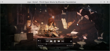
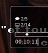

mpv
Dieser Artikel wurde für die folgenden Ubuntu-Versionen getestet:
Ubuntu 16.04 Xenial Xerus
Ubuntu 14.04 Trusty Tahr
Zum Verständnis dieses Artikels sind folgende Seiten hilfreich:
mpv  ist ein Kommandozeilen-Medienplayer (inklusive minimalistischer GUI), der auf den Quellen von MPlayer und mplayer2 basiert. Wie der MPlayer unterstützt mpv eine Vielzahl von Betriebssystemen und Medienformaten (Audio und Video). Er eignet sich auch zur Wiedergabe von DVDs und Blu-Rays sowie für TV-Empfang (analog und digital/DVB). Hervorzuheben ist, dass in mpv die Encodierfunktionen von Mencoder integriert sind (in mplayer2 fehlen diese).
ist ein Kommandozeilen-Medienplayer (inklusive minimalistischer GUI), der auf den Quellen von MPlayer und mplayer2 basiert. Wie der MPlayer unterstützt mpv eine Vielzahl von Betriebssystemen und Medienformaten (Audio und Video). Er eignet sich auch zur Wiedergabe von DVDs und Blu-Rays sowie für TV-Empfang (analog und digital/DVB). Hervorzuheben ist, dass in mpv die Encodierfunktionen von Mencoder integriert sind (in mplayer2 fehlen diese).
|  |
| mpv mit Bildschirmmenü |
mpv unterscheidet sich von seinen Vorgängern in zwei wesentlichen Punkten:
mpv setzt besonders auf eine mit Hilfe von OpenGL verbesserte Videoqualität und kann den Grafikchip (GPU) zum Rendern der Ausgabe nutzen (VDPAU (Nvidia),VA API (Intel) und XvBA (AMD); siehe auch Video-Dekodierung beschleunigen).
mpv besitzt im Vergleich zum MPlayer angepasste Optionsbezeichnungen und unterschiedlich eingefärbten Status- und Fehlermeldungen. Beispielsweise wurde aus der MPlayer-Option
-ss HH:MM, die zur angegebenen Zeit in Sekunden springt, in mpv--start. Auf einer speziellen GitHub-Seite ist u.a. auch eine Tabelle mit allen gegenüber MPlayer geänderten Optionen angeführt.
Bomi (ehemals CMplayer) bietet eine grafische Oberfläche für mpv. Weitere Oberflächen sind im ArchWiki zu finden.
Installation¶

mpv ist in den offiziellen Paketquellen enthalten[1]:
mpv (universe )
 mit apturl
mit apturl
Paketliste zum Kopieren:
sudo apt-get install mpv
sudo aptitude install mpv
PPA¶
Alternativ kann eine aktuellere Version über ein – unter den nachfolgend aufgeführten Alternativen auszuwählendes – "Personal Package Archiv" (PPA)[2] installiert werden. Die nachfolgend aufgeführten PPAs werden auf der mpv-Installationsseite offiziell für Ubuntu empfohlen.
mpv-tests¶
Adresszeile zum Hinzufügen des PPAs:
ppa:mc3man/mpv-tests
Hinweis!
Zusätzliche Fremdquellen können das System gefährden.
Ein PPA unterstützt nicht zwangsläufig alle Ubuntu-Versionen. Weitere Informationen sind der  PPA-Beschreibung des Eigentümers/Teams mc3man zu entnehmen.
PPA-Beschreibung des Eigentümers/Teams mc3man zu entnehmen.
Damit Pakete aus dem PPA genutzt werden können, müssen die Paketquellen neu eingelesen werden.
Nach dem Aktualisieren der Paketquellen erfolgt die Installation wie oben angegeben.
vapoursynth¶
Neben mpv inklusive --enable-vapoursynth Build-Flag sind in dem PPA u.a. auch noch verschiedene Pakete für den Frameserver VapourSynth enthalten.
Adresszeile zum Hinzufügen des PPAs:
ppa:djcj/vapoursynth
Hinweis!
Zusätzliche Fremdquellen können das System gefährden.
Ein PPA unterstützt nicht zwangsläufig alle Ubuntu-Versionen. Weitere Informationen sind der PPA-Beschreibung des Eigentümers/Teams djcj zu entnehmen.
Damit Pakete aus dem PPA genutzt werden können, müssen die Paketquellen neu eingelesen werden.
Nach dem Aktualisieren der Paketquellen erfolgt die Installation wie oben angegeben. Mehr Informationen zur VapourSynth-Unterstützung sind in der Manpage zu finden.
Konfiguration¶
mpv verwendet für Encoding-Profile die systemweite Konfigurationsdatei /etc/mpv/encoding-profiles.conf. Die allgemeine systemweite Konfigurationsdatei ist /etc/mpv/mpv.conf. Benutzerspezifische Standardeinstellungen und Profile können in der Datei ~/.mpv/config (bei neueren Versionen in ~/.config/mpv/config und bei noch neueren Versionen in ~/.config/mpv/mpv.conf) im Homeverzeichnis gespeichert werden. Anstatt also z.B. jedes Mal die Option --vo=opengl-old an den Befehl anzuhängen, kann man Folgendes in die Datei eintragen (Zeilen, die mit # beginnen, sind Kommentare)[3]:
# Verwende opengl-old Video-Ausgabe als Standard. (Der Video-Ausgabetreiber opengl-old ist speziell # für ältere GPUs konzipiert, jedoch auch nur bei älteren mpv-Versionen verfügbar bzw. überhaupt nötig. # Bei neueren Versionen würde mpv eine Fehlermeldung ausgeben.) vo=opengl-old # Lautstärke: 100 % volume=100
Siehe dazu auch den Abschnitt Bedienung.
Hinweis:
Diese Standardeinstellungen setzt man am Besten ganz nach oben in die Datei, oberhalb etwaiger Profileinträge (s.a. den Text nach diesem Hinweis). Alternativ könnte man Standardeinstellungen auch in einem Profil mit dem Namen default eintragen. Es ist aber ziemlich egal, sie sind zu Einträgen im default-Profil gleichrangig, ganz egal ob dieses (zusätzlich) existiert oder nicht!
Um das Arbeiten mit unterschiedlichen Konfigurationen zu erleichtern können Profile definiert werden. Ein Profileintrag beginnt mit dem Profilnamen in eckigen Klammern:
[still] # profile-desc legt eine Profilbeschreibung fest, die mit der Option --profile=help # zusammen mit den Profileinstellungen angezeigt wird. Die Profilbeschreibung ist optional. profile-desc="stilles Profil" # Lautstärke: 0 % volume=0
Um ein Profil zu verwenden, wird es beim Start von mpv mit der Option --profile= aufgerufen:
mpv --profile=PROFILNAME
Des Weiteren bieten Auto-Profile die Möglichkeit, Voreinstellungen anzugeben, die nur für bestimmte Dateiendungen oder Eingabeprotokolle (z.B. dvd:// oder tv://) gelten sollen. Ab Ubuntu 16.04 werden diese Auto-Profile bei Angabe des entsprechenden Eingabeprotokolls bzw.der Dateiendung automatisch geladen, bei Ubuntu 14.04 müssen sie noch manuell aufgerufen werden:
# Profil für die DVD Wiedergabe; Sprache Deutsch, Untertitel Englisch, Zeilenentflechtung ein [protocol.dvd] profile-desc="Profil für dvd:// Streams" alang=de slang=en deinterlace=yes
Hinweis:
Einträge in den normalen Profilen bzw. Auto-Profilen setzen gegenteilige Einträge in den Standardeinstellungen sowie in einem eventuell vorhandenen Profil mit dem Namen default außer Kraft!
Und es gibt noch weitere Möglichkeiten:
[still] profile-desc="stilles Profil" # Lautstärke: 0 volume=0 # Vollbild "Ja": fullscreen=yes [protocol.http] profile-desc="Profil für http://-Streams" # Man kann andere (Auto-)Profile mitbenutzen. Das klappt auch innerhalb von normalen Profilen. Es ist egal, # ob das mitbenutzte (Auto-)Profil ober- oder unterhalb des benutzenden (Auto-)Profils steht. profile=still # Im Folgenden ist "fullscreen=no" aktiv, hätte es aber vor "profile=still" gestanden, so wäre "fullscreen=yes" # aus dem stillen Profil aktiv gewesen; ergo zählt immer der spätere Eintrag! fullscreen=no # Der Cache-Speicher ist auf "auto" gesetzt, damit er für Netzwerk-Streams geeignet ist # (automatische Aktivierung bei Bedarf); die Größe wird durch die Option "cache-default" festgelegt: cache=auto # Die Größe des bei Bedarf aktivierten Caches in kByte: cache-default=300000 # Falls das Video größer würde als der Bildschirm, dann reduziere es auf die Bildschirm-Größe: autofit-larger=100%x100% # Falls das Video kleiner würde als der Bildschirm, dann erhöhe es auf die Bildschirm-Größe: autofit-smaller=100%x100% # Stellt die anfängliche Fenster-Position ein; angegeben als prozentualer Anteil der Bildschirm-Größe: geometry=50%:50% # Lässt den Demuxer in einem separatem Strang laufen und ihn eine sichere Menge an Paketen vorabrufen: demuxer-thread=yes # Bei aktivierter Option "demuxer-thread" wird die angegebene Menge an Sekunden im Voraus gepuffert: demuxer-readahead-secs=240 # Wie viele Sekunden an Audio/Video bei aktiviertem Cache vorabgerufen werden: cache-secs=240 # Die Wiedergabe startet, wenn der Cache sich mit der angegebenen Menge in kByte gefüllt hat: cache-initial=1024 [protocol.https] profile-desc="Profil für https://-Streams" profile=protocol.http
Eine Liste aller verfügbaren Eingabeprotokolle erhält man mit:
mpv --list-protocols
Eine Liste aller verfügbaren Profile – auch der in mpv eingebauten – sowie der Auto-Profile erhält man mit:
mpv --profile=help
Informationen zu einem bestimmten Profil gibt es mit:
mpv --show-profile=PROFILNAME
Beim Profil default wird jedoch lediglich die Profilbeschreibung angezeigt!
Um zu erreichen, dass sämtliche systemweite und benutzerspezifische Konfigurationsdateien (z.B. mpv.conf und input.conf) ignoriert werden wird mpv mit der Option --no-config aufgerufen:
mpv --no-config /PFAD/ZUR/DATEI__oder__URL-der-STREAMING-WEBSEITE__oder__STREAMING-URL__oder__PROTOKOLL://...
Mehr Informationen zu Profilen bzw. Auto-Profilen sind in der Manpage zu finden.
Bedienung¶
mpv kann auf verschiedene Arten zur Multimedia-Wiedergabe gestartet werden:
Hinweis:
Die beiden ersten, grafische Oberflächen betreffende Möglichkeiten stehen in früheren Ubuntu- bzw. mpv-Versionen u.U. nicht zur Verfügung!
Über einen Menü-Eintrag, z.B. im LXDE-Menü unter "Unterhaltungsmedien -> mpv Media Player". In das geöffnete Fenster zieht man nun per
 -Klick eine Multimedia-Datei.
-Klick eine Multimedia-Datei.Indem man entweder mit
 -Klick das Kontextmenü einer Multimedia-Datei aufruft und dort dann mit -Klick den Eintrag "mpv Media Player" auswählt oder aber – falls mpv als Standardanwendung verwendet wird – per (Doppel-)-Klick direkt eine Multimedia-Datei startet.
-Klick das Kontextmenü einer Multimedia-Datei aufruft und dort dann mit -Klick den Eintrag "mpv Media Player" auswählt oder aber – falls mpv als Standardanwendung verwendet wird – per (Doppel-)-Klick direkt eine Multimedia-Datei startet.In einem Terminal-Fenster[4]; mit dem Befehl:
mpv /PFAD/ZUR/DATEI__oder__URL-der-STREAMING-WEBSEITE__oder__STREAMING-URL__oder__PROTOKOLL://... --vo=opengl-old
wird z.B. eine Video- oder Audiodatei bzw. ein Internet-Stream abgespielt oder werden auch Medien von verschiedenerlei sonstigen Geräten wiedergegeben.
Hinweis:
Der Video-Ausgabetreiber
opengl-oldist speziell für ältere GPUs konzipiert, jedoch auch nur bei älteren mpv-Versionen verfügbar. Bei neueren Versionen wird stattdessen automatisch der normaleopengl-Ausgabetreiber verwendet und man kann sich deshalb die Option--vo=opengl-oldersparen.Auf der Kommandozeile an mpv übergebene Optionen setzen etwaig vorhandene gegenteilige Einträge in Profilen bzw. Auto-Profilen außer Kraft. Siehe dazu auch den vorigen Abschnitt Konfiguration.
Eine Liste der verfügbaren Video-Ausgabetreiber erhält man mit dem Befehl:
mpv --vo help
bzw. äquivalent mit:
mpv --vo=help
Eine Liste der verfügbaren Audio-Ausgabetreiber erhält man demgegenüber mit dem Befehl:
mpv --ao=help
Eine kurze Zusammenfassung der wichtigsten mpv-Optionen erhält man mit:
mpv --h
Wenn man an den vorigen Befehl etwas erweitert, so kann man gezielt Hilfe zu bestimmten Wortnustern bekommen. Im folgenden z.B. für das Wort "scale":
mpv --h=scale
Dito, aber jetzt auch mit allen Optionen welche das Wort "scale" enthalten:
mpv --h=*scale*
Eine Ausgabe der verwendeten mpv-Programmversion erhält man mit der Option --version bzw. -V.
Information¶
Sofern man mpv über die Kommandozeile gestartet hat, so zeigt er dort einige Informationen (Dateiformat, Codec, Erstelldatum, Länge) über das abzuspielende Video an, die auch von Einsteigern leicht verstanden werden können. Bei DVDs werden alle verfügbaren Audiospuren und Untertitel angezeigt, bei DVB die Frequenz, bei TV die Treiberinformationen der TV-Karte bzw. Webcam.
Hier ein Beispiel für den von Youtube gestreamten Film Sintel:
mpv http://www.youtube.com/watch?v=HomAZcKm3Jo --vo=opengl-old
Playing: http://www.youtube.com/watch?v=HomAZcKm3Jo [quvi] Checking URL... [cache] Cache size set to 320 KiB Cache fill: 20.62% (67584 bytes) Detected file format: QuickTime / MOV (libavformat) Clip info: major_brand: mp42 minor_version: 0 compatible_brands: isommp42 creation_time: 2013-12-08 02:53:19 [stream] Video (+) --vid=1 (*) (h264) [stream] Audio (+) --aid=1 --alang=und (*) (aac) Selected video codec: H.264 / AVC / MPEG-4 AVC / MPEG-4 part 10 [lavc:h264] Selected audio codec: AAC (Advanced Audio Coding) [lavc:aac] AO: [pulse] 44100Hz stereo 2ch float VO: [opengl-old] 1280x546 => 1280x546 420p AV: 00:00:33 / 00:14:48 (3%) A-V: -0.000 Cache: 45%
Die Informationsausgabe lässt sich über insgesamt neun Stufen über die Option --msg-level=<module1=level1,module2=level2,...> für jedes Modul einzeln anpassen. Mit
mpv http://www.youtube.com/watch?v=HomAZcKm3Jo --vo=opengl-old --msg-level=all=v
werden für den Film Sintel erheblich mehr Informationen ausgegeben. Mehr Informationen zu den --msg-level-Optionen sind in der Manpage zu finden.
Streaming¶
mpv kann auch diverse Arten von Internet-Streams (wie z.B. Streaming-Dateien, Streaming-Playlisten und Live-Streams) abspielen und wahlweise auch dauerhaft speichern.
Hinweis:
Im Zweifelsfalle sollte die URL-der-STREAMING-WEBSEITE bzw. die STREAMING-URL in (doppelte) Anführungszeichen gesetzt werden, damit vermieden wird, dass etwaige darin vorkommende Sonderzeichen von der Shell interpretiert werden können[5]. Das & würde etwa als Zeilenumbruch gewertet werden. Notfalls kann man aber das Terminal mit der Tastenkombination
Strg +
C , bei aktiviertem Terminal, wieder beenden[6].
Abspielen geht so:
mpv URL-der-STREAMING-WEBSEITE__oder__STREAMING-URL
Das funktioniert auch mit Streaming-Playlisten, wobei mpv automatisch den Stream mit der bestmöglichen Qualität auswählt. So gibt mpv den ersten Stream der Streaming-Playliste wieder:
mpv --playlist=PLAYLIST-URL
mit einer zusätzlichen Option:
mpv --playlist=PLAYLIST-URL --playlist-start=2
aber den dritten, denn die Zählung ist nullbasiert. Die Option --playlist-start=NUMMER heißt so erst seit Neuesten, in Ubuntu 16.04 hieß sie noch --playlist-pos=NUMMER und in Ubuntu 14.04 existierte sie überhaupt noch nicht.
Hilfreich besonders für die Untersuchung von Streaming-Playlisten sind die beiden Programme avprobe bzw. ffprobe.
Mit der Option --stream-capture=video.mp4 kann ein Internet-Stream gleichzeitig betrachtet und gespeichert werden:
mpv STREAM-URL --stream-capture=video.mp4
Mit der Option --stream-dump=video.mp4 kann ein Internet-Stream direkt gespeichert werden:
mpv STREAM-URL --stream-dump=video.mp4
Das Speichern eines Internet-Streams sollte nicht unterbrochen werden, weil sonst Header-Informationen verloren gehen können und das Video damit unlesbar wird. Aus dem selben Grund klappt oft auch das Speichern von Live-Streams nicht bzw. letztere können hinterher entweder gar nicht oder nur mit VLC abgespielt werden.
Youtube¶
Für die Wiedergabe von Youtube-Videos wird einfach die URL des Videos an mpv übergeben:
mpv http://www.youtube.com/watch?v=VIDEOCODE
Hinweis:
Es ist angebracht, eine aktuelle Version von youtube-dl auf dem System zu haben, damit mpv das Video mit der bestmöglichen Qualität abspielen kann.
Mit der Option
--no-ytdlspielt mpv das Video direkt – also ohne youtube-dl – ab
DVD-Wiedergabe¶
Zur DVD-Wiedergabe sind zunächst einige Vorbereitungen zu treffen. Anschließend lassen sich DVDs mit dem folgenden Befehl wiedergeben:
mpv dvd://
Sollte die DVD nicht als /dev/dvd ins System eingebunden sein (ab Ubuntu 13.10 üblich), kann man sie unter Angabe der Gerätedatei (hier z.B. als /dev/sr0) abspielen:
mpv dvd:// --dvd-device=/dev/sr0
 Die DVD-Wiedergabe mit Menü erfolgt mit Hilfe der Bibliothek libdvdnav über den Befehl:
mpv dvdnav://menu
Dies funktioniert noch nicht einwandfrei. Über das Bildschirmmenü ist es aber möglich, die verfügbaren Audiospuren (Sprechblasensymbol) und Untertitel (Rechtecksymbol) per Mausklick auszuwählen. Eine andere Möglichkeit ist, den Videotrack über seine Nummer, die Audiospur mit --alang=de und die Untertitel mit --slang=de direkt anzugeben. In folgendem Beispiel wird der erste Videotrack der DVD (normalerweise der Hauptfilm) mit deutscher Synchronisation oder, falls diese nicht verfügbar ist, in Englisch mit ungarischen Untertiteln abgespielt:
mpv dvd://1 --alang=de,en --slang=hu
Der folgende Befehl macht das Gleiche, mit der Option longest wird aber automatisch der längste Videotrack der DVD ausgewählt:
mpv dvdnav://longest --alang=de,en --slang=hu
Blu-Ray-Wiedergabe¶
mpv sollte unverschlüsselte Blu-Ray-Disks mit Hilfe der Bibliothek libbluray wiedergeben können:
mpv bd://
mpv verwendet zur Wiedergabe verschlüsselter Blu-Rays die gleichen Bibliotheken wie VLC. Weitere Informationen zur Installation sind im Artikel Blu-Ray wiedergeben und dieser Diskussion zu finden.
Video- und Audiofilter¶
Eine der großen Stärken von mpv sind seine zahlreichen Filter. Eine Ausgabe aller verfügbaren Videofilter erhält man per:
mpv --vf help
Eine Ausgabe aller Audiofilter erhält man per:
mpv --af help
Ein paar Beispiele:
Film deinterlacen:
mpv /PFAD/ZUR/DATEI --vf=yadif
Die Option
--vf=yadifbenötigt viel CPU-Rechenzeit. Eine Alternative ist beispielsweise :mpv /PFAD/ZUR/DATEI --vf=pp=lb
Videofenster verkleinern ohne Qualitätsverlust:
mpv /PFAD/ZUR/DATEI --vf=dsize=360:203
Lautstärkeregelung per Software kann den Sound verzerren (normalerweise sorgt die Soundkarte und/oder der Soundserver dafür, eine höhere Lautstärke einzustellen). Hier eine Verstärkung um 10dB:
mpv --af=volume=10
Audio-Wiedergabe und Aufnahme direkt von der Soundkarte¶
mpv kann über das Protokoll av:// (das auf die Bibliothek libavdevice zurückgreift) den Ton direkt von der Soundkarte wiedergeben:
mpv av://alsa:hw:0
An den Befehl können noch Audio-Filter angehängt werden, auch das Encodieren des Tons ist möglich. Der folgende Befehl erstellt vom Ton der ersten (eingebauten) Soundkarte eine MP3-Datei:
mpv av://alsa:hw:0 -o out.mp3
TV-Wiedergabe und Aufnahme¶
Video4Linux2 - Webcam¶
Analog-TV ist zwar inzwischen in den meisten Bundesländern abgeschaltet, aber eine Webcam oder ein Videograbber ist für Linux nichts anderes als eine TV-Karte ohne Tuner.
Variante 1 - mpv kann mit mit dem Protokoll
av://ein Video von einem v4l2-Gerät wiedergeben:mpv av://video4linux2:/dev/video0
Hinweis:
Beim
av://Protokoll ist es in mpv aber nicht möglich noch weitere Optionen wie die Videonorm, die Inputnummer, die Bildwiederholrate (FPS) oder die Größe des Videos einzustellen. Vor dem Aufruf des mpv Befehls können diese Einstellungen mit dem Programm qv4l2 vorgenommen werden.Variante 2 - mpv kann auch mit dem von MPlayer bekannten Protokoll
tv://ein v4l2-Video wiedergeben:mpv tv://
wird das Bild von einer Webcam oder von einer an einem Grabber angeschlossenen analogen Videoquelle angezeigt (wenn das Gerät als /dev/video0 im System registriert ist). Die wichtigsten Optionen für das Betrachten von analogem Videomaterial mit mpv sind im folgenden Befehl zusammengestellt:
mpv tv:// --tv=driver=v4l2:device=/dev/video0:input=0:fps=25:norm=PAL:outfmt=uyvy:width=720:height=576 --no-correct-pts
Die Option
--no-correct-ptsvermeidet die ständige Fehlermeldung, dass keine Video-PTS vorhanden sind.
Mit der Erweiterung des Befehls ist sogar eine gleichzeitige Wiedergabe von Video und Ton möglich, allerdings mit einer deutlichen Verschiebung der Tonspur, die mit der - Taste korrigiert werden kann:
mpv tv:// --tv=driver=v4l2:device=/dev/video0:input=0:fps=25:norm=PAL:outfmt=uyvy:width=720:height=576:alsa:amode=1:forcechan=2:audiorate=48000:adevice=hw.2:forceaudio:immediatemode=no --no-correct-pts
Mehr Informationen zu den --tv-Optionen sind in der Manpage zu finden.
Bei analogem Video empfiehlt es sich, z.B. mit --vf=pp=lb einen Deinterlace-Filter einzusetzen und das Seitenverhältnis mit z.B. --aspect=16:9 festzulegen.
Video4Linux2 - Aufnahme¶
Für eine Aufnahme muss an die angeführten mpv av://... bzw. mpv tv://...-Befehle nur die Option -o mit dem Dateinamen der Ausgabedatei und den ensprechenden Codec-Parametern, wie im Abschnitt Encodierung beschrieben, angehängt werden. Optional kann eine Filterkette angefügt werden.
DVB-Wiedergabe¶
Als erstes muss eine entsprechende ~/.mpv/channels.conf erstellt werden. Eine ausführliche Anleitung zur Erstellung einer geeigneten channels.conf ist hier im Wiki vorhanden.
Hinweis:
Die channels.conf muss in der szap/tzap/czap/azap-Syntax sein, die scan als Voreinstellung erzeugt. W scan erzeugt eine solche Datei erst mit der Option -X.
Nun kann mpv das TV-Programm mit dem Befehl:
mpv dvb://
oder
mpv dvb://SENDERNAME
anzeigen. Der SENDERNAME muss exakt der Bezeichnung aus der ~/.mpv/channels.conf entsprechen (Leerzeichen - falls vorhanden - maskieren!). Mit den Tasten
H und
K wird jeweils ein Programm vor- und zurückgeschaltet, mit
F zwischen Fenster- und Vollbildmodus umgeschaltet.
DVB-Aufnahme¶
mpv kann DVB-Transport-Streams direkt mit der Option --stream-dump=Aufnahme.ts auf der Festplatte aufnehmen (ca. 25 MB/Minute):
mpv dvb://SENDERNAME --stream-dump=Aufnahme.ts
Dabei wird der Stream nicht umgewandelt, sondern einfach gespeichert. Alternativ kann auch gleich im gewünschten Format (hier: MP4) aufgenommen werden (siehe auch nächster Abschnitt):
mpv dvb://SENDERNAME -o Aufnahme.mp4
Mit der Option --stream-capture=Aufnahme.ts wird das Programm gleichzeitig aufgezeichnet und wiedergegeben, was aber viel Systemleistung benötigt und oft nicht funktioniert.
Encodierung¶
Bei mpv ist eine Encodierfunktion, die beim MPlayer in das separate Programm Mencoder ausgelagert wurde, integriert. Mit der Option --o und der Angabe einer Ausgabedatei wird mpv in den Encodiermodus umgeschaltet. Die Eingabedatei (das kann auch ein Youtube-Link, eine DVD oder ein v4l2 Gerät z.B. eine Webcam sein) wird jetzt nicht mehr am Bildschirm angezeigt, sondern in das angegebene Format umgewandelt.
mpv erkennt an der Endung der Ausgabedatei das gewünschte Dateiformat (.mp4, .avi, .mp3, .ts ...) und verwendet dafür voreingestellte Werte, diese können aber mit Angabe der entsprechenden Option überschrieben werden. Zum Beispiel erreicht man mit der Option --ovcopts=b=1200k (Videobitrate) beim .avi-Format eine höhere Qualität als mit dem voreingestellten Wert.
Die Zusammenstellung eines mpv-Kommandos für die Encodierung erfolgt nach diesem Schema:
mpv infile -o outfile [--of=outfileformat] [--ofopts=formatoptions] \ [--ofps=outfps | --oautofps] [--oharddup] [--ocopyts | --orawts] [--oneverdrop] \ [(any other mpv options)] \ --ovc=outvideocodec [--ovcopts=outvideocodecoptions] \ --oac=outaudiocodec [--oacopts=outaudiocodecoptions]
Eine sehr ausführliche Liste aller verfügbaren Formate, Codecs und Optionen kann man mit dem folgenden Befehl durchblättern:
mpv -ovc help -ovcopts help -oac help -oacopts help -of help -ofopts help | less
Beispiele:
Wandelt ein von mpv unterstütztes Video in ein H.264-Video mit AAC-Audio um:
mpv infile -o outfile.mp4
Wandelt ein Video in das AVI-Format um:
mpv infile -o outfile.avi --ofps=25 --ovc=mpeg4 --ovcopts=qscale=4 --ovcopts=b=1000k --oac=libmp3lame --oacopts=ab=128k
Weitere Encodierbeispiele sind über den Abschnitt Links zu finden.
Tastenbefehle¶
| Grundlegende Tastenbefehle | |||
| Taste | Funktion | Taste | Funktion |
| Esc | Wiedergabe beenden | 0 | Lautstärke erhöhen |
| Wiedergabe pausieren | 9 | Lautstärke verringern | |
| → | 10 Sekunden vorspringen | M | Audioausgabe de- & aktivieren |
| ← | 10 Sekunden zurückspringen | F | Vollbildanzeige de- & aktivieren |
| ↑ | 1 Minute vorspringen | # | Audiospur wechseln |
| ↓ | 1 Minute zurückspringen | J | Untertitel wechseln |
| Bild ↑ | 10 Minuten vorspringen | O | On-Screen-Display wechseln |
| Bild ↓ | 10 Minuten zurückspringen | ||
Weitere Tasten erläutert die Manpage von mpv . Wer eigene Tastenkombinationen einsetzen möchte, bearbeitet die Datei ~/.mpv/input.conf bzw. ~/.config/mpv/input.conf nach folgendem Beispiel:
# 90 Grad im Uhrzeigersinn drehen Alt+RIGHT no-osd vf add rotate=90 # 90 Grad gegen den Uhrzeigersinn drehen Alt+LEFT no-osd vf add rotate=270
Links¶
Reference Manual
- Dokumentationmpv - IRC-Channel für Nutzer
mpv-devel - IRC-Channel für Entwickler
How To Use mpv – CLI Media Player
- Blogbeitrag, 10/2014VideoPlayer
 Programmübersicht
Programmübersicht
 und
und
- Erstellt mit Inyoka
-
 2004 – 2017 ubuntuusers.de • Einige Rechte vorbehalten
2004 – 2017 ubuntuusers.de • Einige Rechte vorbehalten
Lizenz • Kontakt • Datenschutz • Impressum • Serverstatus -
Serverhousing gespendet von